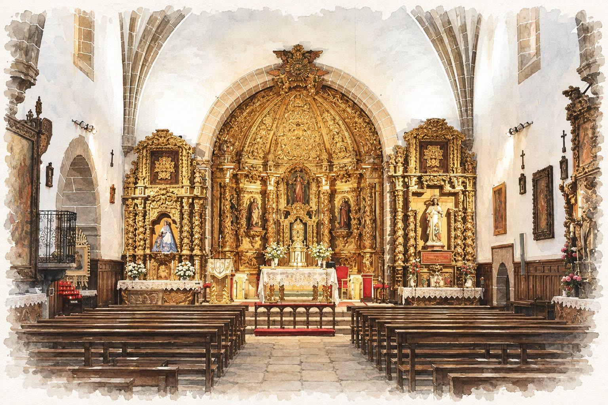

La ceremonia

El día de la boda
Nos daremos el sí frente al retablo de la iglesia de Peraleda, y seguiremos la fiesta entre los olivos de Valmojado hasta que se haga de noche.
- CeremoniaIglesia de Santiago Apóstol · hora por confirmar
- CelebraciónFinca Valmojado · hora por confirmar
- ConfirmaciónEn esta misma página